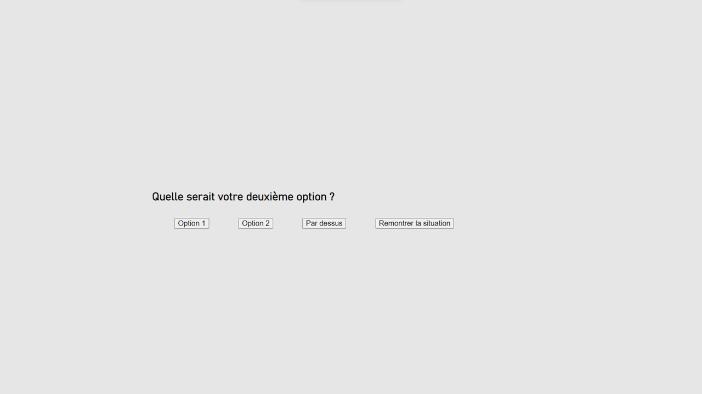
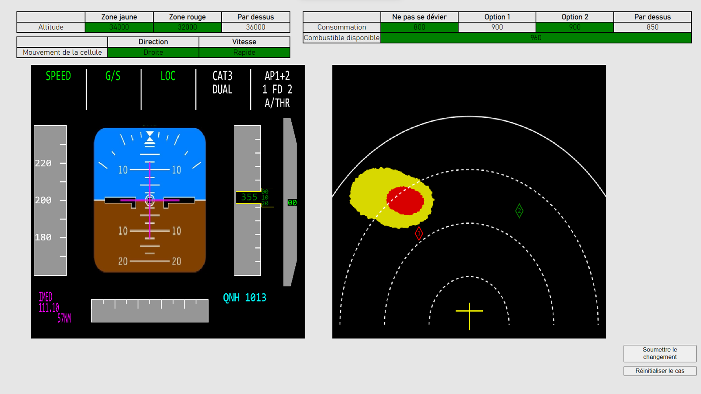

Dans les situations qui suivent, une fois que vous aurez choisi votre réponse, l'écran illustré dans l'image ci-dessous s’affichera en vous demandant quelle serait, pour vous, la deuxième meilleure option (choix) pour la même situation. 
Vous pourrez choisir parmi les trois options que vous n’avez pas choisies. Dans l’exemple affiché l’option choisie était « Ne pas se dévier », ainsi les options pour le deuxième choix sont « Option 1 », « Option 2 » et « Par-dessus ».
Si vous voulez voir à nouveau la situation pour choisir votre deuxième option, vous pouvez cliquer sur le bouton « Remontrer la situation ».
Une fois vous aurez choisi votre deuxième meilleure option l'écran illustré ci-dessous s’affichera à nouveau. L’objectif dans cet écran c’est de modifier le facteur qui vous ferait préférer votre deuxième option, c’est-à-dire, qu’elle devient votre première option.
Dans les tableaux vous pouvez modifier les cellules en vert. Pour ce faire, veuillez cliquer sur la cellule que vous souhaitez modifier et introduire la valeur que vous considérez appropriée.
Lorsqu’ils sont affichés en vert, vous pouvez aussi déplacer les losanges des options 1 et 2. Veuillez cliquer dessus et maintenir le bouton de la souris enfoncé pour le déplacer.
Si vous n’êtes pas satisfait.e du changement fait ou voulez évaluer d’autres changements avant de prendre une décision, veuillez cliquer sur ce bouton pour récupérer la situation originale et pouvoir modifier une autre variable.
Une fois vous serez satisfait.e avec la nouvelle situation affichée, c’est-à-dire, votre deuxième option deviendrait la première, veuillez cliquer sur ce bouton pour passer au cas suivant. 